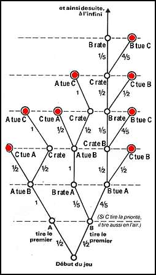

LE JEU C'EST QUOI ?
La définition du mot selon le Larousse :
Nom masculin (latin: jocus), action de jouer; récréation, divertissement... suivent plus d'une 30ène de définitions s'appliquant aux jeux de société, au sport, au théatre, à la mécanique, à l'argent, à la musique, au caractère d'une personne...
A vrai dire, le jeu peut se présenter sous des formes infinies. Petit, on joue à ne pas marcher sur les lignes des pavés ; plus grand, on se pare de bijoux fantaisie, de tissus élégants, de bijoux en argent ou autres déguisements. Alors, pour ne pas nous éparpiller, nous développerons surtout la thématique des jeux en bois, parfois anciens, et des jeux de société modernes, très soignés.
Une tentive de défintion du jeu (de divertissement)
d'arpès "Les jeux et les hommes" de Roger Caillois
Qu'est-ce qu'un jeu ?
Les jeux sont très nombreux et fort différents: jeux de société, d'adresse, jeu de hasard, jeux de construction, de patience, de plein air.. Pour jouer, on peut utiliser des jouets, ou seulement son corps et son esprit. Le jeu repose, amuse. Il évoque une activité sans contrainte ni conséquence pour la vie réelle. Il s'oppose au monde du travail car il ne produit rien.
Il existe de multiple théories sur les jeux. Pour Henry Bett, les jeux sont une résurgence involontaire
d'instincts vitaux qui ont aujourd'hui perdu leur signification, pour d'autres, le jeu est une activité
fonctionnelle de délassement, ou encore le moyen d'investir un surplus d'énergie que les activités de survie ne
suffisent plus à absorber.
Certains psychologues voit dans le jeu l'expression et la condition du développement de l'enfant. D'autres au
regard de la théorie psychanalytique freudienne, rapprochent le jeu aux autres activités fantasmatiques de
l'enfant. La fonction essentielle du jeu apparaît alors dans la réduction des tensions nées de l'impossibilité
de
réaliser ses désirs.
L'historien Néerlandais Huizinga considère que le jeu est le fondement de la culture. Il affirme que le jeu est
à
l'origine de toutes les institutions sociales, pouvoir politique, guerre, commerce, dont il met en lumière
l'élément ludique. A l'inverse le sociologue Suédois Yrjö Hirn voit dans le jeu l'aboutissement ultime d'un
processus de décomposition des institutions sociales. Il en veut comme preuve les nombreux rites disparus dont
les jeux représentent une survivance dégradée.
Et si le jeu était à la fois une résurgence de nos instincts et un exutoire, une outil de socialisation et un
défouloir, l'origine et l'aboutissement de tout ?
Typologie des jeux
Roger Caillois propose la classification des jeux en quatre rubriques:
- Compétition
- Chance
- Simulacre
- Vertige
Compétition:c'est le domaine de la rivalité qui porte sur plusieurs qualités: rapidité, endurance, vigueur, mémoire, adresse, ingéniosité… Cette rubrique englobe les sports (courses, lutte, tir..) et les jeux d'esprit (dame, échec, jeux de société…) Le ressort du jeu est pour chaque concurrent le désir de voir reconnue son excellence dans un domaine donné. Cela suppose une attention soutenue, un entraînement approprié, des efforts assidus et la volonté de vaincer.
Chance:Le hasard est le seul artisan de la victoire. C'est l'arbitraire pur du hasard qui constitue l ressort du jeu; le joueur est donc "passif". C'est le domaine des jeux de dés, des loterie, des roulettes, des paris sur les courses… Les plus savants sont sur un pied d'égalité avec les moins intelligents.
Simulacre:Le jeu peut consister à devenir soi-même un personnage illusoire et à se conduire en conséquence. Le sujet joue à faire croire, il oublie sa personnalité pour en feindre une autre. On peut citer: les masques, les mimes, les jeux d'imitation, les jeux de rôle… Le plaisir est d'être autre ou de se faire passer pour un autre.
Vertige:Le jeu peut consister à devenir soi-même un personnage illusoire et à se conduire en conséquence. Le sujet joue à faire croire, il oublie sa personnalité pour en feindre une autre. On peut citer: les masques, les mimes, les jeux d'imitation, les jeux de rôle… Le plaisir est d'être autre ou de se faire passer pour un autre.
Cette claification peut être reprsenté sous forme de cible. Les limites entre les 4 domaines sont évidement très floues.
Comme on le voit vouloir effectuer un classement définitif et absolue des jeux semble complètement illusoir
La définition de Bruno Faidutti
Sur les quelques forums et newsgroup consacrés aux jeux auxquels moi et mes amis jouons régulièrement revient,
assez régulièrement, une surprenante question: comment les appeler ?
Et certains de proposer le ridicule "jeu de plateau", traduction littérale de l'anglais boardgame. Outre qu'en
français classique la surface de jeu ne s'appelle pas un plateau mais un tablier, tous ces jeux ne se jouent
pas
sur un plateau, et beaucoup d'autres jeux se jouent sur un plateau. D'autres, cherchant sans doute à flatter
leur
égo par des termes un peu prétentieux, veulent parler de jeux de simulation ou de jeux de stratégie, des termes
qui de toute évidence ne peuvent pas s'appliquer à des jeux qui n'ont le plus souvent aucune prétention de
simulation et sont loin d'être toujours stratégiques.
Pourquoi diable ne pas parler, comme tout le monde, de jeux de société? Sans doute pour se conforter dans
l'idée
que nos jeux seraient d'une part meilleurs - et je pense effectivement qu'ils le sont, parce que nous sommes
des
amateurs éclairés, des connaisseurs - , et d'autre part différents par nature - et il est évident qu'ils ne le
sont pas - des Monopoly, Mille Bornes et autres Taboo que l'on trouve dans les supermarchés.
Pour moi, les choses sont claires: les jeux que je fais, les jeux auxquels je joue, sont des jeux de société,
rien de plus, rien de moins.
La stratégie face au hasard
s'après un article de la revue "Jeu & Stratégie" juillet 1980
Lorsque l'on parle de jeux stratégiques, on pense avant tout aux échecs et au go. Pourtant, ce n'est pas parce que les cartes sont distribuées au hasard au bridge et que l'on lance les dés au Monopoly ou dans un wargame, que l'on ne peut y élaborer une stratégie. Mais elle doit alors s'appuyer sur des résultats de calculs des probabilités.
Il y a les jeux de hasard en ligne. Nous supposons qu'ils ne passionnent pas les visiteur de ce site! Il y a
les
jeux où, théoriquement du moins, le hasard n'a aucune part: les dames, les échecs, le go, tous ces jeux dits
"nobles". Ils font en général l'objet d'abondantes analyses théoriques. Et puis, il y a tous les jeux qui ne
sont
ni totalement soumis à Dame Fortune et ses longs cheveux qu'il faut savoir saisir, ni complètement sous la
coupe
de la raison triomphante. Ce sont bien souvent les plus divertissants; ce sont en tout cas les plus nombreux.
Cartes (bridge, belote, tarot...), "jeux de société" du genre Monopoly, wargame, ou même Mastermind mêlent en
proportions variables chance et habileté. Mais il y a des champions de bridge, de belote, de Monopoly, de
Diplomacy ou de Mastermind. C'est donc que le bon joueur sait tirer partie de l'élément de hasard. Il le fait,
consciemment ou non, en utilisant quelques notions de probabilités mathématiques.
Prenons un exemple. Un joueur de Scrabble, qui doit jouer en premier, a tiré les 7 lettres C E O L S T Y. S'il
est imbattable sur le plan vocabulaire, il verra immédiatement qu'il peut réaliser un " Scrabble " (poser les 7
lettres d'un coup) de deux manières différentes: COTYLES ou SCOLYTE. Laquelle va-t-il choisir? Le calcul des
points obtenus immédiatement ne suffit pas.
En posant COTYLES horizontalement avec le L sur l'étoile, le C sera doublé ainsi que le mot, ce qui lui
donnera,
avec les 50 points du "Scrabble", un total de 92 points. En posant SCOLYTE horizontalement avec le S sur la
case
étoile, le Y comptera double, le mot également, et avec le bonus de 50 points il atteindra 106 points.
Cependant,
il remarque que dans ce cas, son adversaire, s'il dispose d'un S, pourra le placer à la fin du mot sur une-case
qui triple la valeur du mot. Que doit faire le joueur: "encaisser" immédiatement le plus fort total au risque
de
voir son adversaire marquer lui aussi de nombreux points, ou se contenter d'un total plus faible, mais plus
"sûr"
pour la suite ?
C'est à la sagesse de ce genre de choix que l'on reconnaît le fort joueur. C'est aussi à ce moment que les
mathématiques pointent leur nez.
Prenons à titre d'exemple, car il faudrait pour être complet, analyser un à un tous les jeux de ce ressort, un
petit casse-tête classique. C'est un problème très ancien (le célèbre Martin Gardner, du Scientific American en
trouve la première référence en 1938, mais il réapparaît périodiquement). C'est le jeu des trois cow-boys.
Trois tireurs, d'habileté variable, appelons-les bêtement A, B et C, s'affrontent en un combat d'autant plus
triangulaire qu'il sont chacun en un point, dont ils ne bougent pas, qui est sommet d'un triangle équilatéral.
Ils tirent au sort l'ordre de tir, car chacun ne tire qu'à son tour, jusqu'au bout, jusqu'à ce qu'il ne reste
qu'un survivant. Chaque tireur tire où il veut; sur l'un, sur l'autre, à côté, en l'air, sur lui-même, où il
veut
donc.
Mais, nous l'avons dit, ils sont de précisions différentes. Le premier, A, ne rate jamais son coup: c'est un
super Gary Cooper avec 100% de réussite. Le second, B, est encore très bon, mais ne fait mouche que dans 80 %
des
cas. Enfin, C, moyennement adroit, n'atteint son objectif que dans la moitié des cas: 50 % de réussite.
Le problème est de trouver la meilleure stratégie de chacun et de dire, en supposant que A, B et C adoptent
leur
meilleure stratégie, quelles sont les chances de survie de chacun
Il s'agit bien d'un jeu, simplifié par rapport au jeu de société classique, mais d'un jeu tout de même, que
l'on
peut pratiquer avec des dés: le joueur A ne pose pas de problème puisqu'il touche toujours; le joueur B lance
un
dé et ne rate son coup que lorsqu'il tire un 1, c'est-à-dire une fois sur 6 ; il fait mouche 5 fois sur 6 soit
dans 83 % des cas; le joueur C lance également un dé mais n'atteint son but que s'il tire un 4, un 5 ou un 6
soit
dans 50 % des cas.
La réponse au problème est surprenante: c'est C qui a les meilleures chances de survie! Sa stratégie est assez
simple, au début tout au moins: quoi qu'il arrive, il ne tire pas avant que A ou B n'ait tué B ou A; ou plutôt
il
tire en l'air , même si c'est à lui que le sort réserve l'honneur d'ouvrir le feu. Puis il en découd avec le
survivant.
Il est alors commode, pour vérifier les chances de survie de chacun, de dessiner ce que les mathématiciens
appellent "l'arbre" du jeu: c'est un schéma qui rend visible toutes les situations susceptibles de se produire
dans le déroulement de la partie. La "racine" de l'arbre est le début du jeu. Chaque possibilité d'action de
chaque joueur crée une "branche" de l'arbre. Le mathématicien dessine l'arbre jusqu'à ce qu'il y ait un
vainqueur, puis il en déduit la meilleure stratégie de chacun et prédit le vainqueur le plus fréquent.
L'arbre dessiné en illustration n'est pas totalement complet; il suppose qu'on l'a élagué de ses branches
mortes:
toutes les mauvaises stratégies de C qui ne doit pas se risquer à tirer avant que A ou B soit mort, toutes les
mauvaises stratégies de A et de B qui ne doivent pas tirer sur C avant d'avoir réglé leur question de
préséance.
Cela posé, on voit que, paradoxalement, dans ce jeu un peu "construit" tout de même, ce n'est pas le meilleur
tireur, A, qui a le plus de chances de survie.
Les probabilités de prendre chacune des branches sont indiquées à leur côté.
Le calcul est simple: le mathématicien considère les points que nous avons mis en relief, ceux qui dans
l'arbre,
au bout des branches, indiquent la fin de la partie. On cherche alors ceux qui correspondent à la survie de A,
le
tireur d'élite, et l'on note les probabilités d'y arriver, indiquées le long des branches de l'arbre:
d'un côté 1/2, 1, 1/2, et 1
de l'autre (celui où B tire le premier) 1/2, 1/5, 1, 1/2 et 1
Dans toutes les autres branches, seuls B ou C survivent. Pour calculer la probabilité totale, de survie de A,
il
faut multiplier les probabilités de chaque chemin, puis additionner le résultat de tous les chemins. On trouve
facilement:
1/2 x 1 x 1/2 x 1 = 1/4 pour le premier chemin;
1/2 x 1/5 x 1 x 1/2 x 1 = 1/20 pour le second chemin;
et 1/4 + 1/20 = 3/10 pour le total.
(Eh oui! il faut bien connaître l'arithmétique des fractions pour se risquer dans le domaine des probabilités,
donc des jeux! )
Le calcul est simple: le mathématicien considère les points que nous avons mis en relief, ceux qui dans
l'arbre,
au bout des branches, indiquent la fin de la partie. On cherche alors ceux qui correspondent à la survie de A,
le
tireur d'élite, et l'on note les probabilités d'y arriver, indiquées le long des branches de l'arbre:
d'un côté 1/2, 1, 1/2, et 1
de l'autre (celui où B tire le premier) 1/2, 1/5, 1, 1/2 et 1
Dans toutes les autres branches, seuls B ou C survivent. Pour calculer la probabilité totale, de survie de A,
il
faut multiplier les probabilités de chaque chemin, puis additionner le résultat de tous les chemins. On trouve
facilement:
1/2 x 1 x 1/2 x 1 = 1/4 pour le premier chemin;
1/2 x 1/5 x 1 x 1/2 x 1 = 1/20 pour le second chemin;
et 1/4 + 1/20 = 3/10 pour le total.
(Eh oui! il faut bien connaître l'arithmétique des fractions pour se risquer dans le domaine des probabilités,
donc des jeux! )
Remarque de Florian Horn
J'aime beaucoup ce jeu, qui est tres paradoxal.
Cependant, un détail m'a toujours troublé: La meilleure stratégie de C est bien de tirer en l'air, mais ce qui
m'amuse est que cette stratégie n'est jamais proposée aux deux autres joueurs. Or, supposons que A et B
choisissent de ne pas tirer non plus: ils augmentent alors leurs chances de survie également (en supposant
qu'on
ait affaire à des joueurs parfaits interressés par leur survie)
En effet, si B ne tire pas, A se retrouve devant le choix entre tuer B, ce qui lui laisse deux chances sur 3 de
perdre face à C, tandis que ne pas tirer laisse les deux autres joueurs dans la même position, ce qui devrait
provoquer la même réaction.
Si B est conscient que A va faire ce choix, alors la bonne stratégie consiste a ne pas tirer non plus: choisir
de
tirer sur A entrainant ne chance sur cinq de mourir.
On se retrouve donc devant un duel assez ininterressant et assez long, ou tout le monde tire en l'air... et ou
tout le monde survit!
Les jeux de cartes, nous l'avons dit, sont un excellent champ d'étude de ces stratégies mi-probabilistes, mi-déterministes (le déterminisme est ici la valeur de la position obtenue: argent au Monopoly, nombre de points acquis au Scrabble, possibilité accrue de réussir le contrat au bridge, probabillité de buster au Blackjack).
Prenons le bridge. Supposons que l'un des joueurs, disons Sud, ait appris que les adversaires, Est et Ouest, possédaient à eux deux 5 cartes d'une couleur donnée (l'atout, pourquoi pas ?). Quelle est, se demande-t-il, la répartition entre eux de ces 5 cartes ? Il y a six répartitions possibles: 0-5,1-4,2-3,3-2,4-1 et 5-0. A chacune peut être assignée une probabilité, calculable comme toute probabilité, en évaluant le nombre de cas favorables que l'on divisera par le nombre de cas possibles. Sans entrer dans le détail du calcul, pas très difficile pour un bon élève du secondaire, donnons le résultat : il suffit de le donner, notons-le au passage, pour lestrois premiers cas, les trois autres étant par symétrie évidemment semblables:
répartition
0-5
1-4
2-3
probabilité
2%
14%
34%
On voit l'écrasante supériorité des chances d'une répartition 2-3 ou 3-2. Au moment de jouer sa carte, Sud
devra
s'en souvenir. A lui d'estimer (ou de chiffrer cette estimation) les gains espérés qu'il tirera de cette
connaissance. Pour obtenir l'espérance que lui procurera chaque jeu possible, il multipliera la probabilité de
se
trouver dans le cas considéré par l'estimation chiffrée en points du résultat de l'action.
Un. peu comme notre joueur de Scrabble de l'exemple précédent. Détaillons un peu son calcul. Nous avons vu
qu'en
posant COTYLES il marquait 92 points, mais ne favorisait en rien son adversaire qui marquera "en moyenne" 40
points (2) .Le gain de notre joueur est donc dans le premier cas de 92-40 = 52 points.
Quel gain moyen peut-il espérer en posant SCOLYTE qui vaut 106 points? Il y a 102 lettres dans le jeu parmi
lesquelles 6 S. Le premier joueur a déjà tiré 7 lettres parmi lesquelles 1 S. Il reste donc 95 lettres dont 5
S.
La probabilité pour que le deuxième joueur ait un S parmi ses 7 lettres est de: 1 - 90/95 x 89/94 x 88/93 x
87/92
x 86/91 x 85/90 x 84/89 = 0,324.
Dans ce cas, ce joueur marquerait 87 points pour SCOLYTES triplé:
([1 + 3 + 1 + 1 + (2 x 10) + 1 + 1 + 1] x 3 = 87),
plus les points du mot posé verticalement (triplé) soit, en moyenne, 3 .x 15 = 45 points (2), soit un total de
45
+ 87 = 132 points. Si ce joueur n'a pas de S, il marquera en moyenne 40 points. En résumé: 32,4 % de chances de
marquer 132 point et 67,6 % de chances de marquer 40 points. On peut ainsi évaluer sa marque "mathématique":
(0,324 x 132) + (0,676 x 40) = 70 points.
Le gain moyen du premier joueur ne sera donc que de 106 - 70 = 36 points. Alors, qu'en posant COTYLES. il était
de 52 points. Le calcul impose donc de se contenter des 92 points immédiats de COTYLES !
Il est évident qu'un joueur ne se livrera pas à ce calcul pendant une partie. Mais le bon joueur, nous l'avons
vérifié, choisira "d'instinct" la bonne solution, qui lui rapportera un bénéfice "mathématique" de 16 points.
Pour les amateurs de bridge, souvent d'esprit mathématique, même s'ils n'appliquent pas formellement leurs connaissances au cours du jeu, nous donnerons le tableau des probabilités d'apparition dans le camp adverse de certaines répartitions, lorsqu'est connu le total des cartes d'une couleur que les deux joueurs possèdent. Il est éloquent:
| Probabilités pour que E ait, dans cette couleur | |||||||
|---|---|---|---|---|---|---|---|
| Nombre total de cartes E-W d'une couleur donnée |
0 carte | 1 carte | 2 cartes | 3 cartes | 4 cartes | 5 cartes | 6 cartes |
| 2 | 24% | 52% | |||||
| 3 | 11% | 39% | |||||
| 4 | 5% | 25% | 40% | ||||
| 5 | 2% | 14% | 34% | ||||
| 6 | 0,7% | 7% | 24% | 36% | |||
| 7 | 0,2% | 3% | 15% | 31% | |||
| 8 | 0,1% | 1% | 9% | 24% | 32% | ||
| 9 | 0,5% | 4% | 16% | 29% | |||
| 10 | 2% | 9% | 23% | 31% | |||
| 11 | 5% | 16% | 28% | ||||
| 12 | 2% | 9% | 23% | 30% | |||
| 13 | 5% | 16% | 28% | ||||
Bien entendu le tableau est symétrique. Par exemple, Si EW ont 5 cœurs, la probabilité pour que E ait 1 seul
cœur est de 14 % d'après le tableau. Mais la probabilité pour que W n'ait qu'un cœur. (donc que E en ait 4) est
évidemment identique.
Les chiffres ont été parfois arrondis: mais l'on voit l'énorme supériorité des répartitions quasi égales. Ce
qui
entraîne immédiatement un conseil stratégique, valable pour la plupart des jeux qui nous occupent: le rare est
plus que rare, il est invraisemblable! Oui, nous savons, la psychologie (les annonces, les clins d'œil, les
réactions des adversaires, peuvent modifier ces savants résultats), l'habitude du jeu, tout cela joue un rôle
non
négligeable. Mais ce que l'on appelle "intuition", "expérience", "sens du jeu", n'est souvent que l'aptitude à
saisir des données mathématiques de façon très synthétique: le bon joueur de bridge est très conscient de la
disparité probable énorme entre les répartitions équilibrées et les répartitions extrêmes. C'est le joueur de
loto qui misera sur les probabilités infimes, pas le joueur de bridge. Cette attitude se retrouve chez le
parieur: il est relativement simple de gagner aux courses hippiques en jouant systématiquement les favoris.
Mais le gain sera d'autant plus faible, si le pronostic se confirme, qu'il s'agissait d'un favori. Le vrai
"flambeur" cherchera le "gros coup" en misant sur le "toquard" .Il gagnera beaucoup moins souvent, mais s'il
gagne, ce sera énorme. En fait, concrètement, si la logique et la moralité sont respectées, à long terme les
gains seront les mêmes. Mais il faut un très long terme pour qu'une cote à 1 contre 50 rattrape une cote à 2
contre 3...(33 ou 34 paris si les cotes sont justes. Largement le temps de se ruiner)
.L'idée que nous avons voulu souligner ici est l'importance du produit "probabilité multipliée par gain
espéré".
Dans un bon jeu, toutes les actions envisageables doivent donner le même résultat ou presque sous cet angle, à
très peu de choses près.
Mais le choix possible, à l'inverse, autorise l'existence d'une stratégie dans des jeux où elle n'est pas
évidente loin de là: que l'on revienne au jeu des trois cow-boys; la disparité des chances a priori masquait la
disparité réelle, et considérable, des probabilités. Il est difficile en ce sens de bien équilibrer un jeu.
Tout joueur de Scrabble, par exemple, sait qu'un W est beaucoup plus difficile à poser qu'un Z, qui apparaît
dans
les verbes conjugués, où même qu'un X. Et pourtant, ces trois lettres valent 10 points. Or, si l'on prend les
mots admis par le jeu, ayant de 2 à 9 lettres, on n'en trouve que 65 comportant un W, contre plus de 1 000 pour
le X. Si l'on voulait équilibrer les produits "valeur x probabilité" du X et du W, il faudrait pour le X valant
10 points, accorder au W une valeur de... 150 points !
S'il faut tenir compte de ce genre d'anomalies, il n'en reste pas moins vrai qu'il existe une stratégie
possible
dans tous les jeux qui ne sont pas de pur hasard. Le Joueur est, comme aux échecs, seul responsable de la
conduite de son camp, face à toutes les vicissitudes de la vie, ludique ou non. Le bon joueur tire du hasard
même, les raisons de sa stratégie pour l'accomplir justement, au contraire de ce que dit Mallarmé en un vers
magnifique mais totalement inapplicable au jeu bien conçu: "Un coup de dé, jamais, n'abolira le hasard."
L'existence d'une stratégie conduisant au gain avec une probabilité calculable (ce qui signifie qu'il faut
jouer
plusieurs parties pour désigner le vainqueur dans un jeu mi-hasard, mi-réflexion, mais n'est-ce pas aussi le
cas
des tournois et surtout des championnats d'échecs, de dames ou go ?)
L'avis de Carlos Catarino
C'est extraordinaire que les hommes et femmes s'intéressent tant à élaborer des "livres" concernant une la
demonstration de leur savoir. "Moi je sais"
Pourtant que ce soit stratégie ou jeu de société, ou ce que vous voulez ne croyez-vous pas que l'important
c'est
avant tout le plaisir que vous récoltez? la satisfaction d'échanger vos compétences ou réflexions avec d'autres
Humains?
Et la Vie, c'est quoi pour vous? n'est pas un vrai jeu de stratégie? malheureux tous ceux qui s'y aventurent
sans
en connaître les prérogatives qu'il peut en tirer.
Quel bonheur pour tous d'être dans ce jeu qui apporte chaleur et humilité. Qui permets aussi de réduire à néant
notre égo.
Jouez, jouez et prenez du plaisir. La vie ne doit être que du plaisir.
Pardonnez-moi si je vous aît choqué ou contre dit vos pensées.